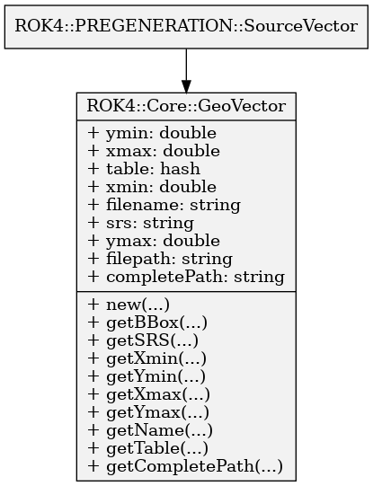

Describes a georeferenced image and enable to know its components.
Using
use ROK4::Core::GeoVector;
# GeoVector object creation
my $objGeoVector = ROK4::Core::GeoVector->new("/home/ign/DATA/XXXXX_YYYYY.dbf");
Attributes
| completePath | string - Complete path (/home/ign/DATA/XXXXX_YYYYY.dbf) |
| filename | string - Just the image name, with file extension (XXXXX_YYYYY.dbf). |
| filepath | string - The directory which contain the image (/home/ign/DATA) |
| srs | string - Projection of file |
| xmin | double - Bottom left corner X coordinate. |
| ymin | double - Bottom left corner Y coordinate. |
| xmax | double - Top right corner X coordinate. |
| ymax | double - Top right corner Y coordinate. |
| table | hash - all informations about vector data |
{
'filter' => '',
'final_name' => 'departement',
'attributes' => {
'ogc_fid' => {
'count' => 101,
'type' => 'integer'
},
'nom_dep' => {
'type' => 'character varying(30)',
'count' => 101
},
'insee_reg' => {
'type' => 'character varying(2)',
'count' => 18
},
'chf_dep' => {
'count' => 101,
'type' => 'character varying(5)'
},
'id' => {
'count' => 101,
'type' => 'character varying(24)'
},
'insee_dep' => {
'type' => 'character varying(3)',
'count' => 101
},
'nom_dep_m' => {
'count' => 101,
'type' => 'character varying(30)'
}
},
'geometry' => {
'name' => 'wkb_geometry',
'type' => 'MULTIPOLYGON'
},
'native_name' => 'departement'
}